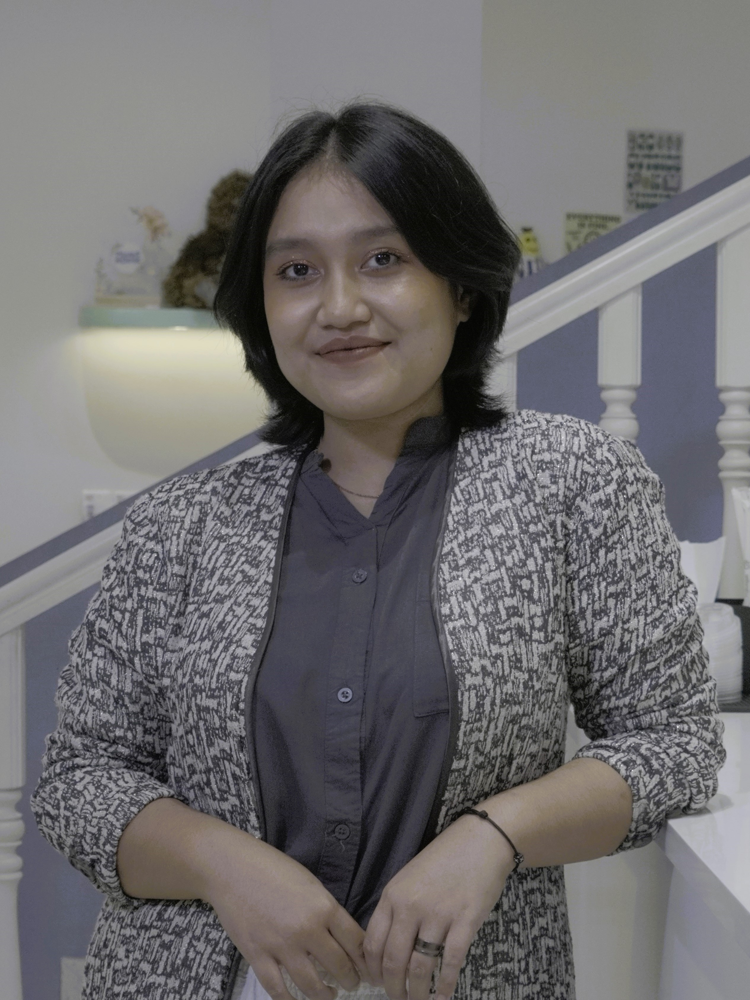
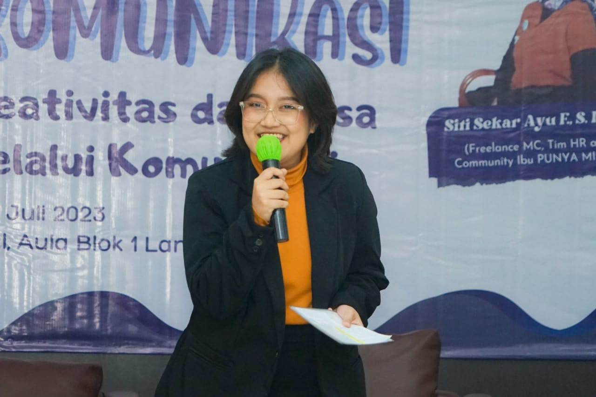
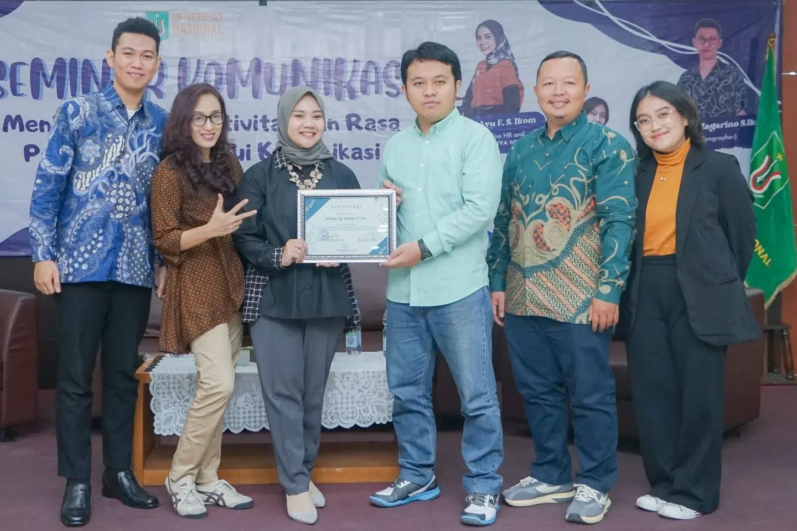

I'm a Communication Science
graduate, corporate communicator
& storyteller.

A little about me.

Hi! I'm Xaviera Ananda Sinaiyangsih — a Communication Science graduate (GPA 3.96/4.00) from Universitas Nasional, Jakarta. My academic journey has been defined by a deep passion for how communication shapes perception, builds relationships, and drives meaningful change.
Most recently, I completed an internship at PT Trakindo Utama's Corporate Communication & CSR Department (Mar–Jul 2025), where I developed social media content strategies, supported major internal events, and produced key communication materials. I thrive at the intersection of storytelling, media production, and strategic communication.
Education & Experience
Education
Communication Science
- Universitas Nasional
Sep 2022 – May 2025
GPA: 3.96 / 4.00
- Maintained an exceptional GPA of 3.96/4.00, demonstrating strong academic discipline and a deep understanding of communication theories.
- Completed relevant coursework in Corporate Communication, Public Relations, and Media Production.
- Selected as a Speaker and Mentor for various community service programs and internal university training.
- Actively involved in campus media and leadership, serving as Deputy Studio Head of Unas TV and News Anchor Coordinator.
Work Experience
Corporate Communication & CSR Intern
- PT Trakindo Utama
Mar 2025 – Jul 2025
- Created and directed monthly social media content plans and employer branding initiatives, including concept development and brief writing for Instagram, LinkedIn, and Facebook.
- Provided event support for two major corporate internal events: Trakindo National Midyear Townhall 2025 and Trakindo Innovakids 2025.
- Ensured the quality of each media production result.
- Composed internal articles, executive council messages, and key communication materials.
- Supported end-to-end media production, including scripting, shooting, and content editing.
- Collaborated with cross-functional teams to maintain alignment with brand guidelines and communication objectives.
Organizational Experience
Deputy Studio Head
- Unas TV (Periode 2024-2025)
Sep 2024 – Sep 2025
- Created and developed concepts and timeline of Unas TV Crew activities.
- Managed, monitored, and supervised each division's performances and job descriptions.
- Ensured and controlled the quality of each media production result.
- Led and coordinated with each head division to carry out the work program.
Speaker & Event Division
- Community Service Program "Melalui Public Speaking, Kita Cegah Bullying"
Sep 2024
- Prepared, created, and managed the event concept and materials to be delivered.
- Provided teaching and lesson guidance to Junior High School students.
- Served as a speaker of the event.
Speaker & Event Division
- Unas TV Community Service 2024 "Transformasi Digital melalui Kreativitas Tanpa Batas"
Sep 2024
- Prepared, created, and managed the event concept and materials.
- Provided teaching and lesson guidance to Junior High School students.
- Coordinated with each division and served as a speaker of the event.
The Chief Committee
- 17'an Unas TV Event
Aug 2024
- Developed a comprehensive event plan including objectives, concept, and implementation strategy.
- Led and coordinated all divisions involved in the event.
- Supervised the event to ensure all aspects proceeded as planned.
- Managed all administrative tasks including permits, documentation, and budget reports.
Moderator
- Sharing Session Unas TV × Api Langit Creative House
Jun 2024
- Led and facilitated discussions to ensure a smooth and engaging seminar flow for "How to Create Your Own Production House".
- Managed time allocation for each speaker and session.
- Summarized key points from discussions and facilitated Q&A sessions.
Floor Director
- Unas TV Streaming "ICOSOP 2023 Universitas Nasional"
Dec 2023
- Coordinated technical aspects at the event.
- Supervised and monitored the progress of the streaming during the event.
- Checked and controlled the quality of the streaming.
Event Division
- HIMAKOM Community Service "Communication Care 2023"
Sep 2023 · Wonosobo
- Prepared, created, and managed the event concept and materials.
- Provided teaching and lesson guidance to Elementary School students.
- Coordinated with each division.
Moderator
~Seminar Komunikasi "Meningkatkan Kreativitas dan Rasa Percaya Diri melalui Komunikasi"
Jul 2023
- Led and facilitated discussions to ensure a smooth and engaging seminar flow.
- Managed time allocation for each speaker and session.
- Engaged with speakers and participants to encourage interactive discussions.
News Anchor Coordinator
~Unas TV (Periode 2023-2024)
May 2023 – Sep 2024
- Created and developed concepts and timeline of News Anchor division for weekly activities.
- Managed, monitored, and supervised News Anchor crew's performances and job descriptions.
- Led socialization, training, and sharing sessions for the News Anchor division.
- Created concepts and ideas for monthly content on Unas TV Social Media.
News Anchor Division
~Unas TV Crew
Nov 2022 – Sep 2025
- Wrote news scripts and articles for content materials.
- Delivered news in the studio and hosted various content as talent.
- Worked as a field news reporter.
My latest work.
My first debut as a news anchor on UNAS TV. I was responsible for delivering the latest news and updates to the audience, ensuring that the information was accurate, engaging, and relevant. I also had the opportunity to interview a special guest, discussing the latest developments in the field of communication science.
My second appearance as a news anchor on UNAS TV. I was responsible for delivering the latest news and updates to the audience, ensuring that the information was accurate, engaging, and relevant.
My first appearance as a non-news host on UNAS TV. I was responsible for hosting a documentary series, "POTRET PASAK NEGERI", which aimed to capture the diverse and vibrant culture of Indonesia. In this episode, I had the opportunity to interview a street food vendor, discussing the challenges and opportunities of running a small business in the capital city.

My first experience as a seminar moderator. I was responsible for facilitating a discussion on the topic of "MENINGKATKAN KREATIVITAS DAN RASA PERCAYA DIRI MELALUI KOMUNIKASI". I had the opportunity to introduce the speakers, engage the audience, and ensure that the event ran smoothly. Watch the documentation here by Unas TV.
Voice over and script writer for UNAS TV's news program, "UNAS UPDATE". I was responsible for writing the script, recording the voice over, and ensuring that the content was engaging and informative. In this episode, I had the opportunity to discuss the collaboration between Universitas Nasional and Baznas, a national zakat institution.
Hosted a non-news program at UNAS TV, "NONA RASA". In this episode, I had the opportunity to explore a unique cafe that offered traditional herbal drinks, known as "jamu". I was responsible for introducing the cafe, interviewing the owner, and sharing my personal experience with the audience.
Reporter for UNAS TV's news program, "UNAS UPDATE". I was responsible for covering the "FESTIVAL BULAN BAHASA 2023 FAKULTAS BAHASA DAN SASTRA UNIVERSITAS NASIONAL", interviewing the participants, and providing a comprehensive overview of the event. I also had the opportunity to discuss the importance of language and literature in the academic community.
Hosted a non-news program at UNAS TV, "NONA RASA". In this episode I had the opportunity to explore a KPOP house, "PEANUT HOUSE" and I was responsible for introducing the cafe, interviewing the owner, and sharing my personal experience with the audience.